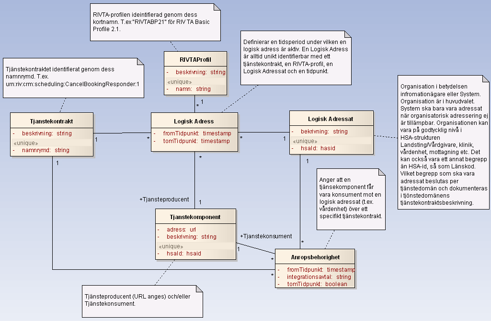

itintegration: registry
1.0.0 - release
itintegration: registry - Local Development build (v1.0.0) built by the FHIR (HL7® FHIR® Standard) Build Tools. See the Directory of published versions
Källa: Itintegration - registry, Tjänstekontrakt, utgåva A (2012-04-14), Tjanstekontrakt_Itintegration_Registry_Beskrivning.doc.
Tjänstekontrakten i denna tjänstedomän speglar T-bokens tjänsteadresseringsmodell. En tjänsteproducent ska hantera tjänsteadresseringsinformation på ett sätt som speglar följande informationsmodell:

Figur 1. Informationsmodell för tjänsteadressering.
| Klass | Beskrivning | Kodverk | |
|---|---|---|---|
| RIVTAProfil | RIVTA-Profil. Namnges med aktuell profils kortnamn (se kodverk). | Definieras av RIVTA-förvaltningen. Dokumenteras på av förvaltningen anvisad plats. När denna text skrevs förvaltas RIVTA av Cehis tekniska expertgrupp på projektplatsen http://code.google.com/p/rivta/ | |
| Tjänstekontrakt | Tjänstekontraktets namnrymd enligt tjänsteschema. Namnrymden omfattar både tjänstedomän och tjänstens namn. | Uppbyggnaden av namnrymd definieras av anvisning för Tjänsteschema (del av RIV TA). Tjänstedomänen fastställs av RIVTA-förvaltningen. |
|
| Logisk adressat | Konceptet definieras av T-boken. Identifierare och innebörd beslutas per tjänstedomän och dokumenteras i respektive tjänstedomäns tjänstekontraktsbeskrivning. | ||
| Tjänste-komponent | Ett begrepp för en mjukvarukomponent som driftsätts i syfte att publicera en tjänstekomponent eller att konsumera en tjänst. Multiplicitet och regler för attributen beror av roll (konsument/producent). | Kodverk saknas på nationell nivå. Landsting och leverantörer har olika angreppssätt för namnsättning och katalogisering av komponenter i sitt systemlandskap. | |
| Anrops-behörighet | En relationsklass som bygger upp en behörighet för en tjänstekonsument (Tjänstekomponent i rollen konsument) att anropa en tjänsteproducent genom att den associeras till en Logisk Adressat (t.ex. en vårdenhet) och ett Tjänstekontrakt (t.ex. ”urn:riv:crm:scheduling:MakeBookingResponder:1”. Behörigheten är löst kopplad till tjänsteproducenten. En vårdenhet som erbjuder direktbokning via Mina Vårdkontakter kan därmed byta tjänsteproducent (bokningssystem) utan att anropsbehörigheten påverkas. | ||
| Logisk adress | En relationsklass som beskriver en addresserbar tjänst. En adresserbar tjänst har ett Tjänstekontrakt som tillgängliggörs av en Logisk Adressat (en verksamhet) genom dess tjänsteproducent (Tjänstekomponent i rollen tjänsteproducent) enligt en viss RIVTA-profil. |